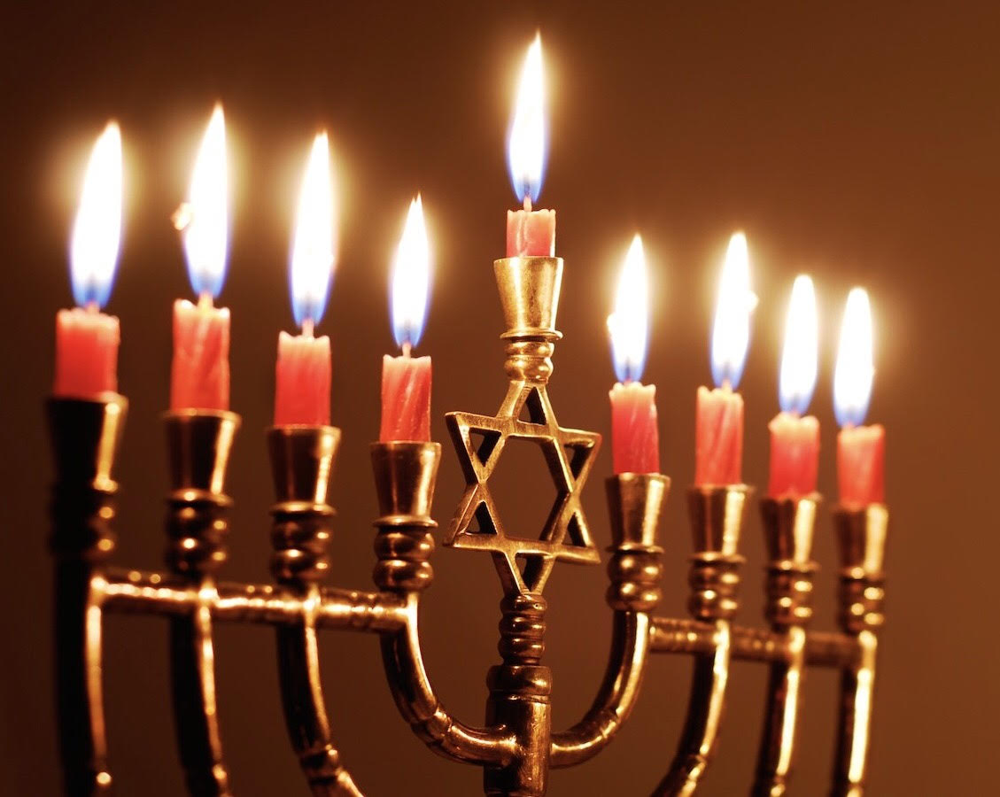
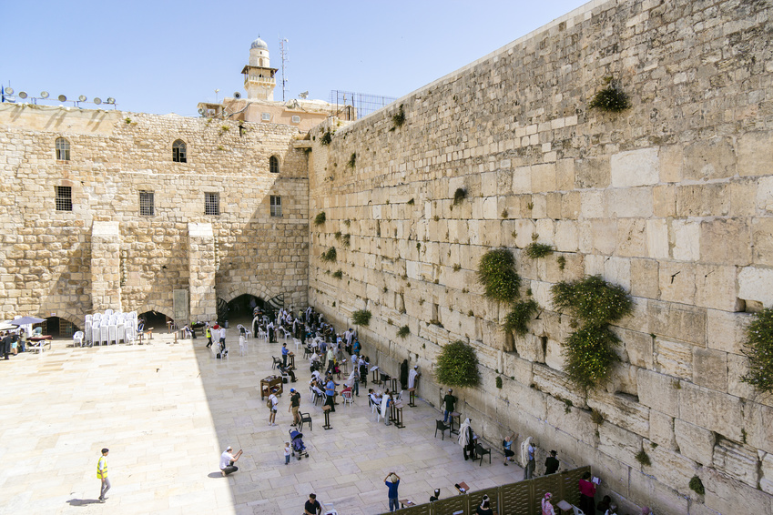

Home
Map
Places of Worship
About Us
Buddhism
Christianity
Hinduism
Islam
Judaism
Sikhism
Learn More
Citations

Judaism
Judaism is an ancient, monotheistic, Abrahamic ethno-religion with the Torah (the Hebrew Bible) as its foundational text.
As a religion, it is characterized by a belief in an omniscient God who revealed himself to Abraham and the other Forefathers, along with Moses and other
prophets chronicled in the Torah. Generally, it is used to describe the way Jewish people live, comprising of theology, law, and numerous complex cultural traditions.
In addition to being a religion, Judaism arose out of a singular ethnic group in the Middle East. After their expulsion from Israel, Jews moved to different regions of the world, developing distinct ethnic and genetic identities separate from both
Jews in other regions but also the inhabitants of those regions.
SECTS AND DENOMINATIONS:
Within Judaism, there are many different groups. There are three main sects- Orthodox Judaism (which includes Ultra-Orthodox and Modern
Orthodox), Conservative, and Reform- and each sect has their own unique interpretation of the Torah and how to live as a Jew in the modern, secular
world. Orthodox Jews are the most observant, Conservative Jews are less observant, and Reform Jews are the least observant.
There are also two main ethnic denominations within Judaism- Ashkenazi and Sephardi. Ashkenazi Jews are the descendants of Jews that lived in Central
and Eastern Europe after being forced to leave Israel, while Sephardi Jews are the descendants of Spanish Jews (who were also forced to leave Israel) who
fled Spain during the Spanish Inquisition and went to the northen coast of Africa. There are many different denominations of Jews from many different
places (like China, Ethiopia, other Middle Eastern countries, and South America), but these are the two biggest ones.
Although both groups are Jewish, they have some different customs and experiences- for example, during the Holocaust, the Ashkenazi Jewish population
in Europe was decimated, with 6 millions Jews (2/3 of the European Jewish population at the time) murdered, while Sephardi Jews were generally not affected
as much.


HOLIDAYS:
In Judaism, there are two types of holidays- those commanded in the Torah, and those set by the Rabbis (Jewish spiritual leaders). Because Judaism is based
on a lunar calendar, all holidays begin at night and end the following night.


Shabbos/Shabbat , or the Sabbath, is a weekly day of rest that occurs on the seventh day. On this day, religious Jews
remember the Biblical creation of the heavens and earth during the sixth day and God's subsequent rest on the seventh day. Observance of the day includes
refraining from the labors of everyday life and spending time with family and friends. It is observed from before sunset on Friday evening until Saturday
night. Traditionally,three festive meals are eaten- one osn Friday night, one in the early afternoon on Saturday, and one late in the afternoon on Saturday. Shabbos
ends with a blessing called Havdalah (Hebrew: "Differentiation/Difference"). The day offers an opportunity to Jews to contemplate their relationship
with God and the more spiritual aspects of life.


Rosh Hashanah (Hebrew: "Head/Beginning of the Year") is a two-day holiday that marks the beginning of the Jewish High Holy Days, or
the Yamim Nora'im ("Days of Awe") and celebrates the beginning of the Jewish civil year. It is on the first of Tishrei, which typically occurs
in early autumn. Some customs of the day are to sound a shofar (a hollow ram's horn) in synagogue during prayer, and eating symbolic foods like
apples dipped in honey (symbolizing a sweet new year).